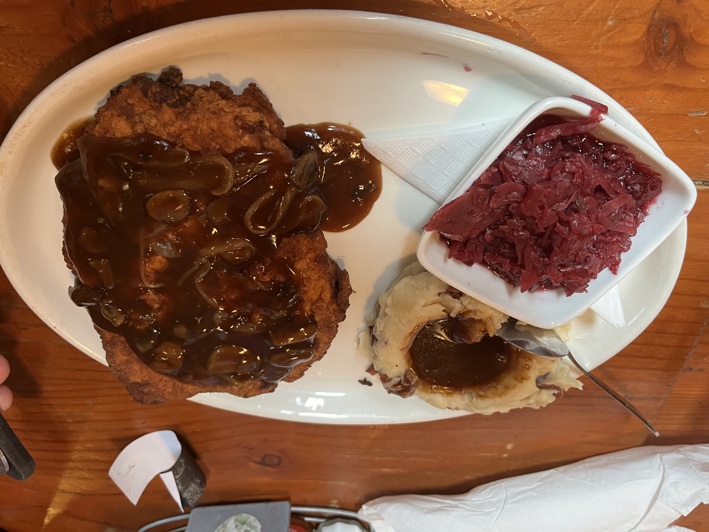
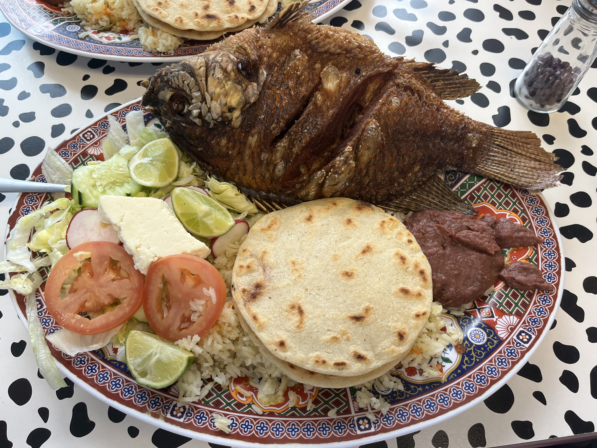
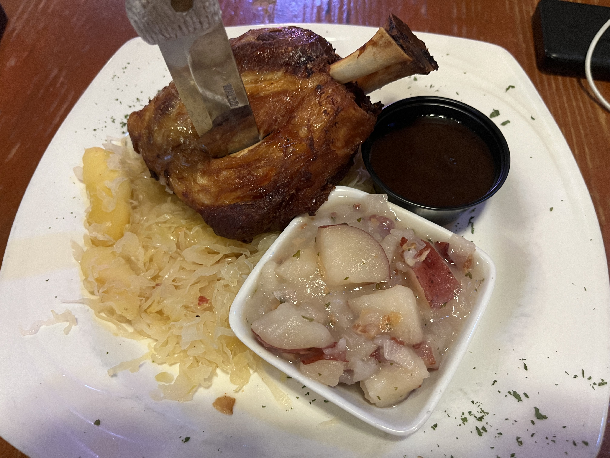
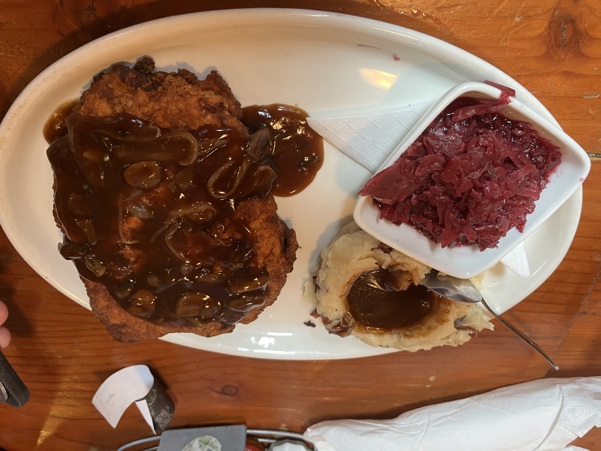
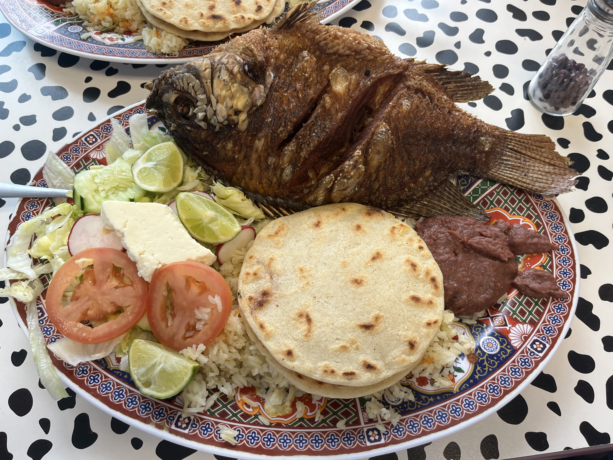
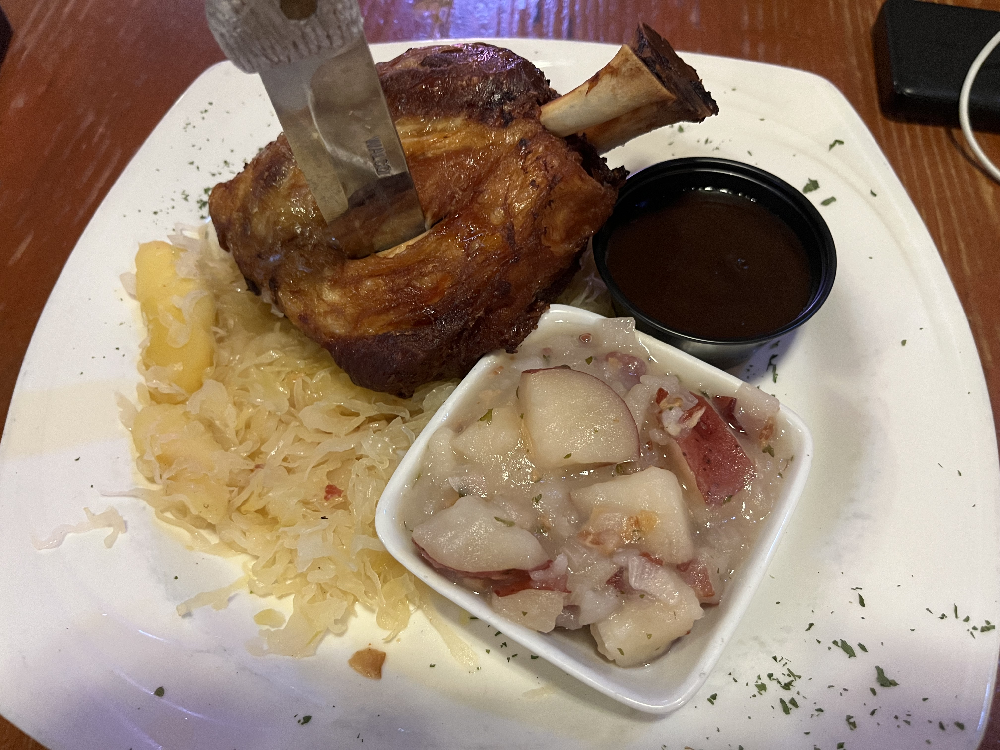
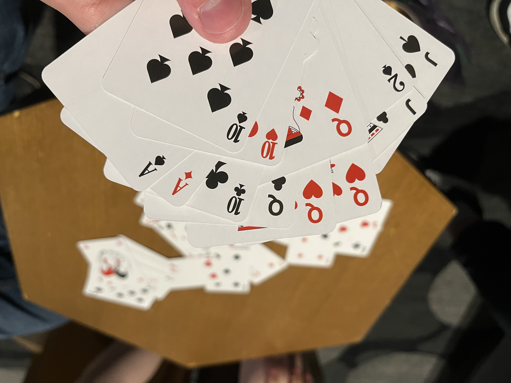

开会一周，Des Moine让我实在没有什么出去扫街、游览的心情和景点，老老实实在宾馆开了几天会。话虽如此，仍有些小感触在此记录下，毕竟Iowa可能是这辈子都不会再来的一个地方。

首先是有位开美国老式车的杀马特小哥，万万没想到红州腹地会有一位中文说的那么流利的小哥，用中文和我打招呼，听得懂我的夸奖，并表示感谢。能清楚地表达车子是老爹的，老爹让他开出来玩，真挺惊讶的。我之前还是有所偏见吧。


其次是这几天吃的食物吧，撇开落地第一顿的Pho，出去吃的居然都远超期待。不得不夸一洗啊师兄的眼光，无论是中东烤肉、 萨尔瓦多（Salvador）的炸鱼、甚至是德国猪排和肘子，都物超所值，十分满意。哥们在波屯还是吃过一些外国菜的，但这地方尤为出色（德国菜是有改良的），价格也很适中，量大管饱型的。果然在这种地方，还是不能追求中餐，得去试试别的菜系。
 





（晚上和朋友们在宾馆打惯蛋，也快一两年没打来吧）
最后念叨下这边的一些城市规划吧。横平竖直的街道，像曼岛一样红绿灯密布，甚至单行道都是如出一辙，难以想象这是地广人稀的大中部。大街上夏天轻易的36 37度，冬天听说比波屯还冷，所以高楼间都有空中楼廊，方便走动。没有红绿灯的情况下，这样去市中心吃午饭倒不失为一种选择。
宾馆旁边的小河好像设置有一个发电机，上面有很强的空气湍流，让远景不清晰。河中横亘着两三棵断木，无奈又苍凉。河边的Asian Garden还有一丝情趣，生肖和小小的石狮颇为可爱。